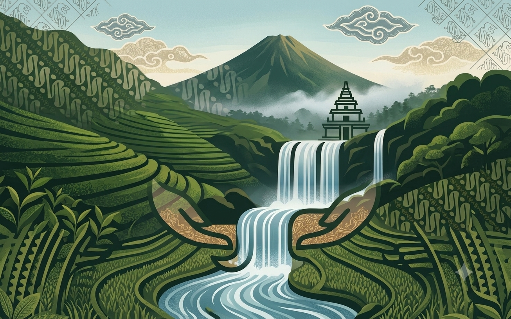
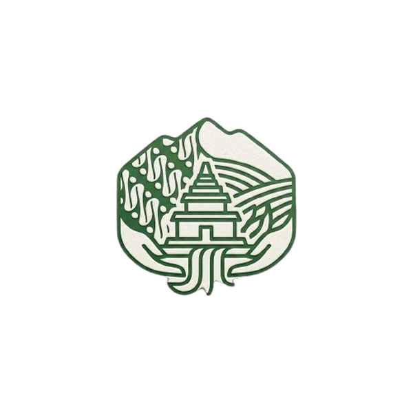

Tentang
Laras adalah Digital Heritage Experience Platform — ruang untuk merasakan, bukan sekadar membaca, jiwa budaya Kabupaten Karanganyar.
Budaya bukan sesuatu yang hanya disimpan di museum. Budaya adalah sesuatu yang hidup, terus berkembang bersama masyarakat, dan harus dikenalkan kembali kepada generasi muda melalui teknologi digital. Karena itu, Laras mengubah pengalaman mengenal budaya menjadi sebuah perjalanan digital.
Dalam budaya Jawa, "Laras" berarti keselarasan — harmoni antara sejarah, budaya, manusia, alam, tradisi, dan masa depan. Laras bukan media informasi, bukan portal pemerintah, dan bukan website wisata. Laras adalah ruang untuk merasakan perjalanan budaya Karanganyar melalui pengalaman digital yang modern.

Laras dirancang untuk Generasi Z, pelajar, mahasiswa, wisatawan, masyarakat umum, hingga siapa pun yang mencintai budaya Indonesia — siapa pun yang ingin merasakan, bukan sekadar membaca, kekayaan budaya Karanganyar.
Laras dirancang sebagai karya untuk kompetisi BYTESFEST 2026 dengan subtema CultureVerse, menggabungkan storytelling, desain modern, dan teknologi web statis untuk membuktikan bahwa teknologi dapat menjadi media efektif pelestarian warisan budaya.